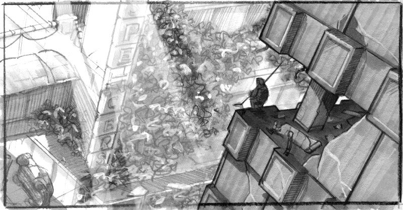
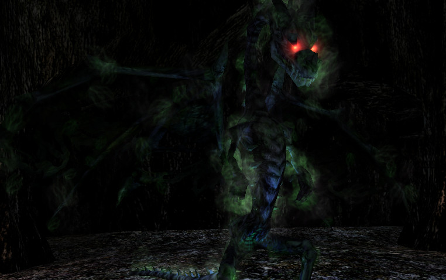
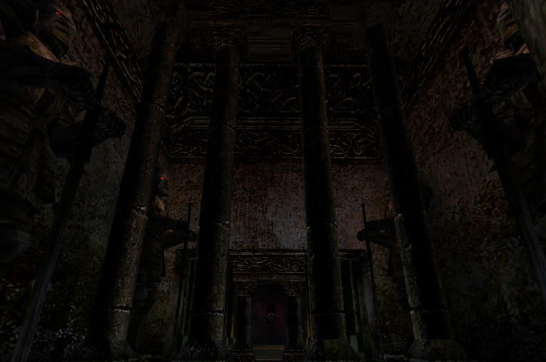
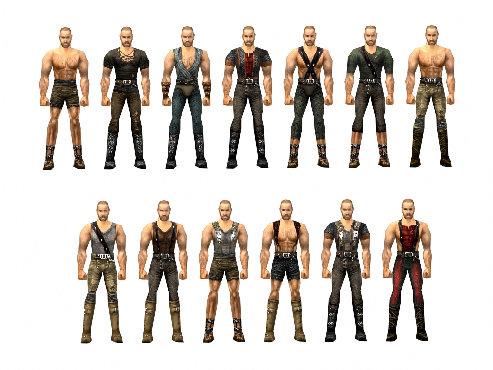
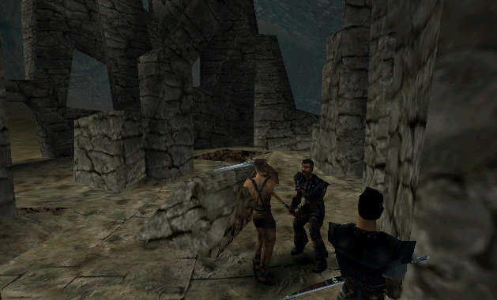
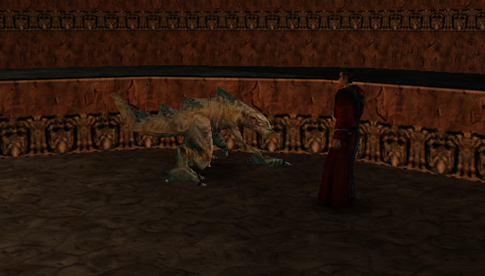
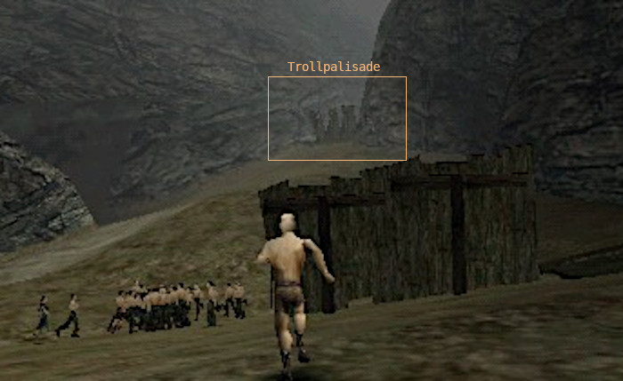

../ Ein Interview mit Mike Hoge
zum 20. Jubiläum von GOTHIC - Part 3/3
von Phoenix Tales
Ein paar Worte zu diesem "Interview" - das keines war. :)
Ich war davon ausgegangen, dass Florian unser Gespräch aufzeichnet, damit keine Informationen verloren gehen. Florian hatte mir wohl gesagt, dass er die Aufzeichnungen als Interview veröffentlichen wolle, aber ich war von bisherigen Interviews nicht gewohnt, dass man aber auch wirklich jeden Satz wortwörtlich zitiert, inklusive teilweise gruseliger Grammatik und ner Menge Kraftausdrücke, die mir beim freien Reden so rausrutschen.
Ich war ein bisschen baff als ich das "Interview" zum ersten Mal las und merkte, wie schlecht ich mich ausdrücke wenn ich einfach so daherquatsche, aber Florian meinte, es wäre lustig, den Text in dieser Form zu veröffentlichen. Also gibt es nun die (fast) ungefilterte "Mike redet frei Schnauze" Version anlässlich des 20. Jahrestags und (hoffentlich) zu eurer Belustigung!
Außerdem will ich diese Gelegenheit nutzen noch einmal der Community zu danken.
Für die vielen Male, an denen in den letzten Jahren Menschen auf mich zugekommen sind und mir erzählt haben, wie viel Spaß sie mit unseren Spielen hatten.
Für das Engagement die Spiele zu modden, kritisch auseinanderzunehmen, die Lore akribisch nachzuvollziehen und sonst alles, was rund um die Spiele passiert ist.
Und natürlich dafür, die Spiele gespielt zu haben!
Danke!
Mike
Hier geht es zum zweiten Teil des Interviews.
Index Part 3
- Über das Story-Writing
- Hintergründe der Mythologie
- Der gecancelte Sci-Fi Shooter
- Der Drache beim Steinkreis
- Die Erbauer der vier Tempel Beliars
- Uwe Meier und die Frauen in Gothic
- Die veränderten Texturen
- Der Nebelturm und das Kloster
- Milten und der Lurker
- Zum Alten Pass
- Warum kann ich nicht Erzbaron werden?
- Das Gothic Remake
- Der Phoenix aus der Asche
Über das Story-Writing
Florian: Steffen Rühl hat erzählt, dass Stefan Nyul in Gothic 1 an irgendeinem Punkt der Entwicklung ganz viele Dialoge gelöscht hätte oder so. War sowas immer abgesprochen oder gabs da auch mal viele Uneinigkeiten bezüglich der Story?
Mike: Ne, es gab einen Haufen Autoren, die im Laufe der Entwicklung mitgewirkt hatten, Navid Vahdat, Carsten Kisslat, ich weiß gar nicht mehr wie die alle hießen. Es gab noch...
Florian: Mattias Filler...
Mike: Mattias Filler auf jedenfall. Mattias Filler hat ja noch an der finalen Version mitgewirkt. Also im Wesentlichen war die Aufteilung so, dass ich das erste Kapitel gemacht hab und die andern beiden, Mattias Filler und Stefan Nyul die letzten Kapitel, vom Prinzip her. Wir haben natürlich auch ein bisschen über Kreuz gearbeitet, aber das Gros vom ersten Kapitel hab ich gemacht und ein bisschen was vom Rest und die haben das Gros vom Rest gemacht und ein bisschen was vom ersten Kapitel.
Und die anderen Leute, wie Rühl und Kisslat und Vahdat und so, die haben bei der Planung der Welt und bei dem Setting und bei den ganzen Entstehungsgeschichten versucht ihren Teil durchzuziehen. Jeder von den Autoren hat so seinen Style reingebracht. Die Art und Weise wie Dialoge formuliert werden ist bei jedem anders. Die Art und Weise wie Quests gemacht werden ist bei jedem anders. Und ein paar Sachen passten halt ins Konzept und ein paar nicht.
Es ist auch unheimlich schwer einen Style zu beschreiben. Vorallen Dingen einen, der gerade in der Entstehung ist. Das heißt wir haben mit vielen verschiedenen Leuten gearbeitet und haben uns dann immer nur die Sachen angeguckt und gesagt: Ne, das ist es nicht. Das ist mir noch zu märchenhaft etc. Und das hast du natürlich immer beim künstlerischen Prozess, dass derjenige, der das dann gemacht hat, erstmal angepisst ist. Weil er hat sich ja total Mühe gegeben und hat irgendwie ne geile Märchengeschichte geschrieben. Dann kommt irgendein Idiot an und sagt, er will das nicht so märchenhaft haben, was soll das überhaupt? Verstehst du was ich meine? Solche Konflikte gibts natürlich in künstlerischen Bereichen immer.
Aber das hat sich dann auch relativ schnell erledigt. Ein paar Leute haben länger mit an dem Projekt gearbeitet, ein paar Leute waren nur für ein paar Monate da.
Ich weiß jetzt leider überhaupt nicht mehr, wer im Endeffekt wie viel gemacht hat. Aber die, die hauptsächlich an der Story mitgewirkt haben, waren tatsächlich Stefan Nyul, Mattias Filler, meine Wenigkeit. Und die anderen hatten halt auch zugearbeitet bzw. deren Sachen wurden geändert, teilweise weggeworfen und neu gemacht. Auch ich hab dann einige von deren Sachen gelöscht, wie Stefan Nyul, und Sachen neu gemacht, weil ich einfach das Gefühl hatte, das passte nicht in den Kram. Das hätte diese Gesamtwirkung dann unterwandert, wenn du es so willst. Da kann man schwer den Finger drauf legen. Es ist jetzt auch nicht so, dass ich sage: Der eine ist deswegen der bessere oder der schlechtere Autor. Sondern es muss einfach harmonisch ineinander passen.
Hintergründe der Mythologie
Florian: Dann bezüglich der Mythologie. Wer war in Gothic 1 für die Mythologie verantwortlich? Wer hat sich die ausgedacht? Die drei Götter und die Namen und was sie für eine Rolle haben in der Welt. War das Stefan Nyul?
Mike: Ne, also mit den drei Göttern, das hab ich gemacht. Und dann kam Filler zu mir und meinte: "Die Namen sind scheiße." Innos, Adanos und Beliar ist dann hinterher von Filler gekommen. Und einer von diesen drei Namen war einer von meinen drei Namen, ich weiß aber nicht mehr welcher. Ich hab ihm nur diese drei Namen vorgelegt und er hat gesagt: "Was ist das denn?" Ich glaube Innos hieß vorher RA bei mir.
Florian: Ja, so hieß es noch im Comic auch.
Mike: Ja? Und dann meinte er so: "Das geht ja gar nicht!" Und dann kam er mit den anderen Namen und dann hab ich gesagt: "Ja gut, die find' ich auch nicht schlecht." - "Ne! Die sind viel besser!" - "Alles klar, dann nehmen wir die." [lacht]
Florian: Die anderen Namen waren vermutlich Cyvanis und Vandras, so kommen sie in der Christmas Edition vor, aber auch Adrastos wird dort erwähnt, der wohl zu Adanos wurde. Kannst du davon was bestätigen?
Mike: Kann sein dass die von der Liste waren, die Mattias vorgeschlagen hat, von der wir die dann ausgesucht haben. Vielleicht weiß der Mattias das. Kann auch sein dass der mit Adrastos kam und ich dann Adanos draus gemacht hab, weil mir das zu vergronkelt war.
Florian: Du hast ja auch Adanos als Nickname [lacht].
Mike: Ja. Das hat aber nen anderen Hintergrund: Dass ich Go spiele, dieses japanische Brettspiel, mit den schwarzen Steinen und so. Weiß nicht ob du davon schonmal was gehört hast.
Florian: Gehört ja, aber nie gespielt.
Mike: Und das spiel ich halt. Das war damals mein Nick beim Go. Als ich mich damals bei Discord das erste mal angemeldet habe, war das um mich der Go Community anzuschließen, da war das halt mein Nickname. Bei dem Spiel gehts auch viel um Gleichgewicht. Wenn man zu gierig wird, verliert man. Und wenn man zu wenig fordert verliert man auch. Und das war so dieses Yin Yang Prinzip beim Go. Und deswegen fand ich den Nickname passend, weil Adanos ja auch für das Gleichgewicht steht, zwischen den zwei Kräften.
Florian: Bezüglich der Rolle dieser drei Götter. In Gothic 1, da gibt es dieses Buch, die Lehren der Götter. Liegt bei den Wassermagiern rum. Da steht z.B., dass Beliar so etwas wie eine Art Totengott ist, dass er eigentlich nur die bestraft, die gegen den Willen Innos handeln. Und in Gothic 2 ist es denn eher so, dass die zwei im Krieg miteinander sind und da hat sich alles geändert.
Mike: Ja. Das war auch schon wieder so ein interner Konflikt. Da erinnere ich mich noch daran, dass ich mit Björn darüber gesprochen habe. Ich weiß nicht ob es am Ende von Gothic 1 oder am Anfang von Gothic 2 war, ich glaube bei Gothic 2. Ich weiß nur, dass dieses Gespräch stattgefunden hat, in dem es darum ging, dass ich wollte, dass der "böse Gott" nicht nur einfach der böse Super-Sauron-Alles-Zerstören-Typ ist, sondern Teil der Gleichung sozusagen. Adanos wahrt das Gleichgewicht zwischen diesen beiden Kräften, aber in der Religion der Welt hat er eben auch einen Platz. "Er wird in Beliars Reich eingehen" heißt nicht zur Hölle fahren, sondern einfach ins Totenreich eingehen. War meine ursprüngliche Idee. Das wollt' ich gerne so haben. Und Björn meinte dann [nicht wortgemäß]: Nein, das muss viel einfacher sein, Beliar ist der Böse und fertig ab, alles andere ist irgendwie zu kompliziert. Und daraufhin ging das dann eben in diese böse Richtung.
Was ich gut fand, was geblieben ist, ist dieses Adanos-Element.
Florian: Das ist so eine Sache, die ich an Gothic 2 ein wenig enttäuschend fand. Weil es so ein klares Gut-Böse Schema einschlägt. In Gothic 1 war das vielschichtiger und tiefgründiger.
Mike: Ja genau. Das ist auch der Zeit geschuldet. Da musst du auch sehen, wenn wir in 11 Monaten sowas runterrocken wollen... Und mit 11 Monaten meine ich from scratch. Mit 11 Monaten meine ich, vor dem weißen Zettel sitzend bis zum Goldmaster. Und da kannst du dir vorstellen, dass du jeden Tag brauchst, um das Spiel zu machen und kannst nicht lange rumspinnen und dir geile Settings ausdenken. Und dann kommst du auf so geniale Ideen wie "die Drachen greifen an und sie müssen alle tot" [lacht].
Die Liebe zum Detail usw., die wir da vorher reingesteckt haben über die Jahre, die ist natürlich im zweiten Teil nicht mehr, ist klar. Das baut so ein bisschen auf dem auf, was wir uns vorher erarbeitet hatten.
Der gecancelte Sci-Fi Shooter
Florian: Nachdem Gothic 1 fertig war, hat sich ja irgendwie Piranha Bytes in zwei Teams gespalten und du hast ja dann ursprünglich an einem Sci-Fi Shooter gearbeitet.
Mike: Das Projekt hieß 'Unplugged'. Und es ging darum, dass es einen Außerirdischen-Angriff gibt, mit EMP, der die gesamte Menschheit aushebelt sozusagen. Ein paar haben Glück und können noch in irgendwelchen Festungen Zuflucht suchen, kommen einigermaßen klar. Und der Rest ist halt vor die Hunde gegangen. Eine Endzeitwelt, die aber nicht so wie bei Fallout ist, sondern genau das Gegenteil, eher so wie bei Last of Us, mit überwucherten Hochhäusern, wo die Natur sich das zurückerobert. Das war die Vision davon.
Florian: Und das hieß Unplugged?
Mike: Das Unplugged Projekt, ja.
Florian: Und dieses Zerberus?
Mike: Das weiß ich nicht mehr. Stefan Nyul hatte immer ein Faible dafür, griechische, mythologische Namen zu nehmen für vorläufige Projektnamen, für Arbeitstitel. Und der hat sich das ausgedacht.
Florian: Und dieses Unplugged, warum hat das dann nicht funktioniert?
Mike: Weil da keiner Lust drauf hatte, sich großartig ein neues Projekt ans Bein zu binden, es sollte die Gothic-Marke weitergemacht werden.
Der Drache beim Steinkreis
Florian: Dann hätte ich noch eine Frage zu Gothic 2. Cor Angar, der ja in Gothic 2 auch wieder auftaucht, sitzt da beim Stonehenge rum und dann gibts in seinem Dialogskript einen Tagebucheintrag, der ausgeklammert wurde und da steht: "Ich habe Angar im Minental gefunden, er vermutet, dass sich in der Felsengruft, wo er sich aufhält, ein Drache befindet, der hier seine untoten Helfer an die Oberfläche entsendet."
Also in diesem Stonehenge, dass da noch ein Drache hätte sein sollen.
Mike: Der untote Drache.
Florian: Der hätte da zuerst sein sollen und dann habt ihr euch später Irdorath ausgedacht? [So wollte ich das lustigerweise auch in meiner früheren G2 Mod machen, wie noch im Changelog nachvollzogen werden kann.]
Mike: Genau, weil das nämlich erst so eine Art Zusatzfigur sein sollte, die noch irgendwo rumspukt und dann brauchte man aber noch einen Endgegner und hat den dorthin verfrachtet.
Florian: Irdorath war aber nicht von Anfang an geplant als Enddungeon?
Mike: Jein. Es war klar, dass es einen Enddungeon geben sollte. Wie groß der wird und wie viel... Du weißt ja, es war wirklich so ein Sprint, die Entwicklung von Gothic 2.
Erbauer der vier Tempel Beliars
Florian: Okay. Es werden vier Tempel Beliars erwähnt in Gothic 2. Und eine Frage von Avallach dazu: Wer hat diese Tempel erbaut?
Mike: Wow. Das ist 'ne gute Frage. Wie gesagt, in meiner Vorstellung der Lore war es immer so, dass es in der religiösen Welt von Gothic diese Gott-Satan Geschichte nicht gab, sondern die Götter waren alle wichtig. Und es wurden ihnen bestimmte Eigenschaften zugeschrieben. Und insofern sollte es so sein, dass auch Beliar seine Anhänger hatte.
Florian: Also Menschen haben die Tempel erbaut.
Mike: Genau. Gibt's ja auch in anderen Götterwelten, dass es einen Totengott gibt, der auch verehrt wird, dem auch anderes zugeschrieben wird, nicht nur Tod und Verderben.
Uwe Meier und die Frauen in Gothic
Florian: Es gab dieses Konzept von Uwe Meier, die 'Paladina'.
Mike: Dazu muss man zwei Sachen wissen. Erstens: Es war damals die Zeit, da gab es z.B. ein Spiel wie Dark Earth, das einen Ork oder so auf dem Cover hatte. Da sind sie hingegangen und haben irgendeinen Hintergrund-NPC genommen, eine Bardame, die mit 'nem dummen Gesichtsausdruck da stand, und die auf's Cover gedruckt statt dem Ork, haben so einen 'Mantel' gemacht für Dark Earth und sind tatsächlich in die Läden gegangen, nachträglich, und haben bei allen neuen Sachen, die sie ausgeliefert haben, diesen Mantel über die Packung gestülpt. Das heißt die Hülle hatte noch 'ne Hülle, mit dieser Blondine, die mit nichts was zu tun hatte, die einfach nur dicke Titten hatte, damit sich das Spiel besser verkauft. Erstens war da also dieser Sex Sells Gedanke bei Piranha Bytes, mit Sicherheit. Und das zweite war: Uwe Meier ist einfach 'n mega Tittenfetischist gewesen. Der brauchte einfach Weiber mit dicken Titten. Und er hat immer schon gesagt, bei Gothic 1 schon: "Was soll das? Was ist das hier für'n scheiß Spiel, da rennen nur Männer rum. Wieso kann ich nicht mal'ne Frau mit dicken Titten machen, verdammt nochmal?" [lacht]
Florian: [lacht - Unterbrechung - zeigt das Paladina Artwork] Die hätte also nicht in Gothic 2 irgendwie auftauchen sollen?
Mike: Nein, ich glaube das ist einfach so ein Traum von Uwe gewesen, so eine Figur mal zu bringen.
Die veränderten Texturen
Florian: Du hast einmal diese tollen Körpertexturen veröffentlicht, die es in zig Varianten gab. Es ist aber fast nichts davon im Spiel enthalten.
Mike: Die hab ich nicht gemacht!
Florian: Ja klar, ich meine nur, die hast du mal in einem Archiv weitergegeben.
Mike: Kann sein. Genau. Das sind irgendwelche Sachen, die Uwe mal gemacht hat, glaub ich. Die sind aber alle auf dem Nacktmesh entstanden. Wir wollten aber, dass die Buddler diese Buddlerhosen haben. Und dann mussten die Texturen nochmal gemacht werden und dann sind sie einfach in die Tonne gewandert. So ist das gelaufen. Der hat da einfach mal losgelegt, hat einfach mal gepinselt. Und dann wurde gesagt: "Ey, wieso pinselst du denn da auf den nackten Typen rum? Pinsel doch mal lieber hierauf rum." [lacht]
Florian: Verstehe. Aber ich finde.. also der Oberkörper, der ist ja immernoch frei bei den Buddlern, da hätte man ja einfach viel Variation reinbringen können.
Mike: Das stimmt. // Ergänzung von Mike: Achso genau, das fiel mir noch ein zu den Buddlern, die der Uwe gemalt hat. Da gings ja nicht nur darum, "ach scheiß drauf, wir sind zu faul, den Buddlern irgenwelche Sachen anzuziehen." Ist ja auch ne Frage der Speicherkapazität. Wenn ich 5 verschiedene Hosen pro Szene hab, oder 15 Texturen. Ich mein wir hätten da sicher die ein oder andere Textur noch unterbringen können. Aber im Prinzip mussten wir schon Ressourcen sparen wie die Sau.
Florian: Was ich mich schon immer gefragt habe: Sehr lange in der Entwicklung habt ihr die Schattenkluft immer blau dargestellt. Erst kurz vor Release wurden nochmal alle möglichen Rüstungen umgefärbt, alles vom Neuen Lager bekam nochmal einen kleinen Blautouch irgendwo, alles vom Alten Lager kleine rote Akzente etc. Mir kam das immer so vor als dachte jemand die Leute wären sonst zu dumm die Lager zu unterscheiden.
Mike: Yup. Schuldig. Naja "Lesbarkeit" ist schon ne Sache.
Der Nebelturm und das Kloster
Florian: Okay, die letzte Sache wären die Freepoints. Es gibt einige Freepoints, auf die wir uns keinen Reim machen können. Wir haben uns zwar selbst was dazu ausgedacht, aber vielleicht weißt du da noch was. Was war zum Beispiel mit dem Nebelturm geplant? Der ist ja nur später mit Chromanin reingepatcht worden, sonst hatte der gar keine Rolle im Spiel.
Mike: Genau. Der wurde da einfach hingebaut, weil da was fehlte. Und da hat sich keiner Gedanken drüber gemacht. Die Levelabteilung ist vorgeprescht. "Jetzt stellen wir hier mal was hin. Hier muss mal langsam irgendwas kommen." Und keiner hatte Zeit sich da irgendwas auszudenken. Und später sind dann Mario und Björn glaube ich hingegangen und haben das da reingeballert.
Florian: So sah früher diese Klosterruine aus.
Da haben ja mal irgendwelche Mönche gelebt, die sich in Tiere verwandelt haben. Weißt du da noch was drüber?
Mike: Ne. Hab ich auch nichts mit zu tun. Das haben dann andere gemacht.
Milten und der Lurker im versunkenen Turm
Florian: Es gibt ja diesen versunkenen Turm von Xardas. Die Frage ist: In der Christmas Edition steht Milten in diesem Turm rum und keiner weiß warum.
Mike: Haha, ich auch nicht. [lacht]
Florian: Da sind zwei Freepoints. Der eine heißt Milten_Item. Heißt der sucht da scheinbar irgendein Item. Es ist ne Mission fürs erste Kapitel und irgendwie ist noch ein Lurker involviert.
Mike: Ja tut mir Leid, kann ich mir nicht erklären, fürs erste Kapitel vor allen Dingen. What the fuck.
[Florian: Wir haben mittlerweile intern eine Lösung für dieses Problem gefunden. Es war eines der Dinge (wenn nicht das Ding), über das ich mir am längsten den Kopf zerbrochen habe.]
Zum Alten Pass
Florian: Im Intro sieht man wie die Gefangenen durch den Alten Pass reingebracht werden. Das ist auch etwa die selbe Perspektive wie bei dem Magier im Intro, der steht scheinbar etwa bei der gleichen Stelle. Das war dieser alte Pass neben der Alten Mine. Und hier sieht man es von der anderen Seite.
Und dieses Objekt (VOB) das da steht, heißt "Trollpalisade". Und da hat man dann die Theorie: War vielleicht dieser Troll-Canyon, der später oben bei diesen Banditen ist, hier geplant, also dass dahinter der Troll war? Und war vielleicht ursprünglich Saturas da positioniert? Das Mesh im Intro gibt es auch nirgendwo, die Berge und so... [in der Magierszene]
Mike: Auch da hat sich keiner drüber Gedanken gemacht. Das war einfach so: Wir brauchen jetzt einen Film, wie die die Barriere machen und die Leute sollen erkennen worum's geht. Aber ob da jetzt'n Berg um 5cm zu weit rechts oder links auf'm Bild ist, da hat sich garantiert keiner drüber Gedanken gemacht. Ich selber auch nicht. Ich war einfach froh, das sah cool aus, passte, alles klar, weiter im Text. Über solche kleineren Regiefehler hat sich wirklich keiner Gedanken gemacht.
Florian: Und war noch irgendwas im Spiel angedacht für diesen alten Pass, der aus der Kolonie führt?
Mike: Ja, das war einfach nur so ne Idee, die ich hatte: Wenn ich so eine Kugel hab, die sich ausdehnt, dann wird das Ding ja auch irgendwo eine Straße schneiden. Also machen wir das auch. Wir machen einen Weg, der jetzt nicht mehr funktioniert, weil da die Barriere ist. Das dumme war nur, dass du dann als Spieler da durch gerannt bist und dachtest da kommt noch irgendwas, weil da ist ja'n Weg. Und als Belohnung kriegst du'n Blitz in den Arsch und bist tot. Ich mein das war nicht so richtig cool. Also haben wir das geändert, weil es nur eine reine Bestrafung war. Fühlte sich nicht richtig an.
Florian: Und bezüglich des Troll-Canyons und ob der dort lokalisiert war?
Mike: Da bin ich überfragt. Das weiß ich nicht mehr. Ich muss auch sagen, was ich hier erzähle, das ist vielleicht zu 90% oder so korrekt. Ich denke die meisten Sachen sind richtig. Aber es gibt immer ne gewisse Unschärfe, weil es so lange her ist.
Generell haben ja auch wie gesagt andere Story-Autoren schon mit halbfertigen Versionen angefangen, Fragmente von Quests zu implementieren. Da mag irgendwer irgendeine Idee gehabt haben für irgendeine Quest, die hinterher abgelehnt wurde. Das sind Dinge, die angelegt worden sind von irgendwelchen Leuten, für Dinge, die es nicht ins Spiel geschafft haben, aber vergessen wurde sie rauszulöschen.
Wir haben natürlich auch mehrere Anläufe gebraucht, eine gute Balance zu finden zwischen Dialogen und wie lange ich latschen muss für was, in welche Situation der Spieler kommt, worauf ich reagieren können muss, was passiert wenn ich dem Typ sein Schwert nicht wieder gebe und drei Tage später da nochmal vorbeilatsche, wie reagiert der dann usw.
Das sind ja alles Sachen gewesen, die sind nach und nach entwickelt worden und wir haben auch einiges verworfen, was nicht funktioniert hat. Auch ich selbst. Manchmal löscht man die Sachen wieder raus, nur nicht immer. Und ein paar von den Karteileichen liegen da noch rum. Da ist kein höheres Geheimnis hinter den meisten Sachen, leider, das sind einfach verworfene Quests.
Florian: Gut. Das war eigentlich alles.
Mike: Na das ist doch gut. Dann sind wir damit durch. :)
[Ergänzung zum 21.03.2021]
Warum kann ich nicht Erzbaron werden?
Florian: Es gibt in den alten Demos ein paar Anzeichen darauf, dass man auch mal selbst als Spieler hätte ein Erzbaron werden können. Was waren oder sind da deine Gedanken dazu oder woran kannst du dich erinnern? Viele Spieler haben beim Spielen von Gothic immer gehofft, dass es irgendeinen geheimen Weg gibt, um Erzbaron zu werden.
Mike: Im Rahmen der Hauptstory sollte das alte Lager "böse" werden. Ich glaube, ab Kapitel 4. Einen Erzbaronweg einzubauen hätte also im hinteren Teil des Spiels doppelte Arbeit erfordert und war nicht wirklich drin. Nach dem ersten Kapitel sollte es linear weitergehen - dass war relativ früh klar. Es stand nie wirklich zur Debatte, das Spiel nach dem ersten Kapitel mit derartigen "Weichen" zu versehen. Wenn ihr da Relikte gefunden habt, sind die ziemlich alt.
Das Gothic Remake
Florian: Zweitens (du hattest mir dazu was gesagt, aber das hatte ich nicht aufgezeichnet): Was hältst du vom offiziellen Gothic Remake? Hast du dir das angesehen?
Mike: Ich kenne leider den aktuellen Stand nicht. Hab mir die Demo angesehen als sie ziemlich neu war. Tja, was soll man sagen. Ich kann viele Designentscheidungen verstehen. Die meisten davon sind wohl Geschmachssache aber an einem Punkt möchte ich meckern. Als ich in der Demo mit Diego gesprochen habe, dachte ich: Das ist nicht mein Diego. Ähnlich gings mir bei den Gardisten. Alle geben den Erklär-Bär. War nicht der Spirit, imho. Aber wie gesagt: Ist lange her, dass ich mir das angeschaut hab.
Der Phoenix aus der Asche
Florian: Und zuletzt: Was hältst du von unserem Projekt, zumindest ausgehend von dem wenigen, was du bisher gesehen hast? Was denkst du über unseren Plan, all diese alten Ideen wiederherzustellen und zu einem harmonischen Ganzen zu führen? Die Leute finden es natürlich wichtig, was der Gothic Erfinder zu so einem Projekt sagt. :)
Mike: Puuh.... Weiß nicht, wie wichtig hier meine Meinung sein sollte. Ihr habt eure Idealvorstellung und wollt euch austoben: Be my guest :)
Aber nachdem ich nur die ersten beiden Seiten eurer Webpage gelesen hatte, dachte ich: F***, die übernehmen sich hart! Und beim Weiterlesen wurd's nicht besser. :)
Hab letztens noch das erste Original Pitch Dokument gefunden, dass ich für Gothic 1 geschrieben habe. Das war ähnlich voll mit Ideen... Also sollte ich wohl besser die Klappe halten - schließlich gilt gleiches Recht für alle. :D
Ich wünsch euch auf jeden Fall viel Erfolg! Fokussiert euch von Anfang an auf die wichtigsten Dinge! Und ich bin gespannt auf die Orkstadt :)
[ Florian: Um ein paar der lustigsten Punkte aus Mikes angesprochenem Pitch zu zitieren: ]
- Up to 8 player network version
- 20 large dungeon levels
- 12 professsions to learn
- Release: End of '98
Florian: Ich auch. :)
Das ist was worauf ich mich besonders freue, daran zu arbeiten.
Wir haben uns sogar ne Sprache ausgedacht. Also die hat sogar Sinn.
Mike: Ui. Top!
Florian: Du kannst Wörter bilden, orkische Sätze. Und der Spieler lernt das dann mit.
Mike: Hätt' ich auch so gemacht, hätten wir die Zeit gehabt. Bei G3 hats nur für ein paar Wörter gereicht.
Florian: Wir dachten, das soll so ein bisschen werden wie Planet of the Apes, es ist eine ganz andere Kultur, die man da kennenlernt.
Mike: Ultima Underworld hats so gemacht mit den Echsen.
Sag mal, die ganzen Kapitel 1-8, 8-23 usw., wie sollen die zeitlich produziert werden? Das dauert ja Jahre. Nur mal aus Neugier.
Florian: Naja, die Kapitel 1-6 sind ja die aus Gothic, erweitert durch Inhalte wie die Orkstadt, da bauen wir ja auf eurer Arbeit auf. Die anderen werden dann mehr from scratch gemacht, aber wir haben ja immer das gleiche Grundgerüst dann. Da wären wir wieder bei dem Grundgerüst, das du angesprochen hast. Wie bei euch mit Gothic 2. Die Leute, die jetzt an der Engine arbeiten, machen das fertig und dann nutzen wir das für die zwei anderen Akte. Da muss dann in dem Bereich [fast] nichts mehr gemacht werden.
Teilweise sind die Programmierer zugleich auch Story-Writer und 3D Modellierer und springen dann um.
Und wir versuchen halt viel Promotion zu machen und "professionell" zu wirken und dadurch ziehen wir viele Gothic Fans an, die uns freiwillig helfen. Dadurch dass es sich rumspricht kriegen wir oft Bewerbungen von Leuten, die uns einfach so helfen wollen. For free. Weil is ja alles nicht-kommerziell.
Mike: Gandhi hat gesagt (sinngemäß): "Wenn du Gutes tust dann sprießen die guten Menschen um dich herum wie Pilze aus dem Boden." Ich wünsch' euch viele Gute!
Florian: Ich liebe Gandhi. Hab viel von ihm gelesen. Vielen Dank!
Das bringt das Interview zu nem tollen Abschluss.
[ Das Gespräch fand am 30.01.2021 statt und wurde abgetippt von Florian. Die kursiven Hervorhebungen entsprechen der Betonung von Mike. Die Ergänzung habe ich am 21.03.2021 vor der Erstveröffentlichung am 22. hinzugefügt. ]